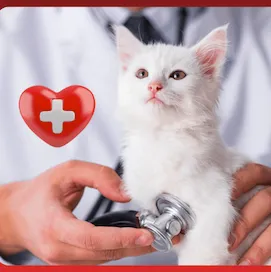
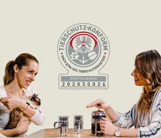
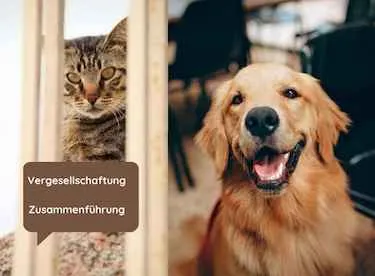

Care4Cats Erste Hilfe und Pflege für Katzen
Produktprofil · Marktplatz-Daten 2026-10-13 · Verkaufsseiten-Recherche 2026-10-13 · Kategorien: Family & Children, Animals & Pets, Education
- Care4Cats Erste Hilfe und Pflege für Katzen ist ein/e Mitgliederbereich & Videokurs in Family & Children und Animals & Pets, vertrieben über den Digistore24-Marktplatz von Anbieter aCATemy-Katzenschule-Petra-Ott, gelistet seit 2026-08-31.
- Listenpreis $136.99; Digistore24 meldet — Checkout-Konversion, — Stornierungsquote und 20 % Affiliate-Provision.
- Verdienst pro Verkauf (Affiliate): $27.39 (Anbieter-seitige Statistik, keine Prognose).
Interesse an Care4Cats Erste Hilfe und Pflege für Katzen? Aktueller Preis, Boni und Garantiebedingungen finden Sie auf der offiziellen Seite des Anbieters:
Offizielle Verkaufsseite ansehen
Affiliate-Link (Werbung) — wir verdienen ggf. eine Provision, ohne Mehrkosten für Sie.

Marktplatz-Daten
| Produkttyp | Mitgliederbereich & Videokurs |
|---|---|
| Preis | $136.99 (Single payment, Installment) |
| Affiliate-Provision | 20 % |
| Garantie/Rückgabe | Laut Verkaufsseite des Anbieters — vor dem Kauf auf der offiziellen Seite prüfen |
| Anbieter | aCATemy-Katzenschule-Petra-Ott (gelistet seit 2026-08-31) |
| Marktplatz-Statistiken* | Checkout-Konversion — · Stornoquote — · Verdienst/Verkauf $27.39 |
* Anbieter-seitige Statistiken von Digistore24; sie hängen von der Traffic-Qualität ab und sind keine Prognose.
Marktplatz-Beschreibung des Anbieters
CARE4CATS® – Katzenkrankheiten · Erste Hilfe · Entspannt zum Tierarzt Ein umfangreicher Onlinekurs für Katzenhalter, die im Alltag und im Notfall mehr Sicherheit im Umgang mit ihrer Katze gewinnen möchten. CARE4CATS® vermittelt praxisnahes Wissen zu häufigen Katzenkrankheiten, Erster Hilfe, Vergiftungen und Reanimation, Schmerzerkennung, Körperpflege, Medikamentengabe sowie stressfreiem Tierarztbesuch und Transporttraining . Der Kurs enthält 91 Seiten PDF-Skripten, 36 besprochene Lernfolien und über 40 Minuten Videomaterial und ist jederzeit online abrufbar. Die Inhalte stammen von erfahrenen Profis aus der Praxis – unter anderem aus der Tierarztpraxis Entenfellner . Ideal für Affiliates mit einer Community rund um Katzen, Tiergesundheit, Katzenhaltung, Tierschutz und verantwortungsvolle Tierbetreuung.
Von der Verkaufsseite des Anbieters
Seitentitel: CARE4CATS® Onlinekurs
Abschnitts-Überschriften
- Sicherheit, Gesundheit & Vertrauen für deine Katze 💛
- Das erwartet dich im CARE4CATS® Onlinekurs:
- Dein Mehrwert durch den CARE4CATS® Onlinekurs
- Für wen ist CARE4CATS® ideal?
- So läuft dein Lernweg ab
- Katzenkrankheiten und Erste Hilfe für Katzen – aus tierärztlicher Sicht
- Körperpflege, entspannt zum Tierarzt und Transporttraining
- Wissenswertes & häufige Fragen (FAQ)
- Sichere dir jetzt deinen Platz um nur 99 Euro
- Petra Ott
Einstiegstext
Deine Katze ist Familie – und wenn es ernst wird, brauchst du Wissen, Ruhe und Sicherheit. Im CARE4CATS® Onlinekurs lernst du Schritt für Schritt, wie du deine Katze bestmöglich schützt und versorgst.
Sei immer vorbereitet: Lerne, Notfälle richtig einzuschätzen und handle souverän, um deiner Katze im Ernstfall schnell zu helfen.
Erkenne Krankheiten frühzeitig: Deute Symptome korrekt, um Schmerzen zu vermeiden und die Gesundheit deiner Katze langfristig zu sichern.
Stärke die Bindung zu deiner Katze: Reduziere Stress bei Tierarztbesuchen und schaffe eine angstfreie Umgebung für dein geliebtes Familienmitglied.
Fragen, die die Verkaufsseite beantwortet
- Für wen ist CARE4CATS® ideal?
CTA-Buttons: „Starte jetzt – bevor du es brauchst"
Recherche-Methode: rohes HTML · 1007 Wörter · Qualität: medium · recherchiert am 2026-10-13. Vollständige Recherche-Datei (MD) ↗
Anwendung — laut Anbieter
Deine Katze ist Familie – und wenn es ernst wird, brauchst du Wissen, Ruhe und Sicherheit. Im CARE4CATS® Onlinekurs lernst du Schritt für Schritt, wie du deine Katze bestmöglich schützt und versorgst.
Alle Inhalte werden leicht verständlich erklärt – praxisnah, Schritt für Schritt und ohne Fachchinesisch.
Weitere Bilder (von der Verkaufsseite des Anbieters)


Bilder stammen von der offiziellen Verkaufsseite des Anbieters und zeigen das Produkt, wie es beworben wird.
Gut zu wissen
- Keine Garantie-Formulierung in unserer Recherche gefunden — bestätigen Sie das Rückgabefenster auf der offiziellen Seite, bevor Sie kaufen.
- Hinweise der Verkaufsseite (wörtlich, nicht von uns geprüft): „⚠️ Wichtig: Der Kurs ersetzt keinen Tierarzt – gibt dir aber Sicherheit im Notfall."
- Hinweise der Verkaufsseite (wörtlich, nicht von uns geprüft): „Hier findest du ehrliche Antworten auf die wichtigsten Fragen, die sich viele Katzenhalter vor dem Start stellen."
- Marktplatz-Zahlen (Preis, Provision, Konversion, Stornoquote) — Quelle: offizielle Digistore24-Marktplatz-API (Affiliate-Sicht), Stand 2026-10-13. Gegenprüfung: Marktplatz-Suche nach Produkt-ID 671225.
- Verkaufsseiten-Zitate — Quelle: https://acatemy-katzen.app.mentortools.com/acatemy-care4cats-erstehilfe-katzenonlinekurs, abgerufen 2026-10-13 (Methode: rohes HTML). Verify: offizielle Seite öffnen.
- Garantie / Rückgabe — vom Anbieter festgelegt; vor dem Kauf auf der Verkaufsseite bestätigen.
- Nicht von uns geprüft: Produktqualität, Ergebnisse, Testimonials — kein Praxistest für dieses Listing durchgeführt.
Häufige Fragen zu Care4Cats Erste Hilfe und Pflege für Katzen
Antworten aus dem Marktplatz-Snapshot (2026-10-13) und der Verkaufsseiten-Recherche (2026-10-13); Anbieteraussagen sind inline gekennzeichnet.
Was ist Care4Cats Erste Hilfe und Pflege für Katzen?
Care4Cats Erste Hilfe und Pflege für Katzen ist ein Angebot des Typs „Mitgliederbereich & Videokurs" im Digistore24-Marktplatz, Anbieter: aCATemy-Katzenschule-Petra-Ott, gelistet seit 2026-08-31. Eingepflegt unter Familie & Kinder und Tiere & Haustiere. Digistore24 wickelt Checkout, Lieferung und Rückgaben ab.
Wie viel kostet Care4Cats Erste Hilfe und Pflege für Katzen?
Der Digistore24-Marktplatz listet es für $136.99 (single payment, installment). Preise legt der Anbieter fest und können sich ändern — der Marktplatz-Eintrag oben zeigt den Schnappschuss; die offizielle Verkaufsseite zeigt den aktuellen Preis.
Gibt es eine Geld-zurück-Garantie für Care4Cats Erste Hilfe und Pflege für Katzen?
Unsere Verkaufsseiten-Recherche hat keine explizite Garantie-Formulierung gefunden. Viele Digistore24-Produkte bieten 60 Tage Geld-zurück, aber das legt jeder Anbieter selbst fest — bestätigen Sie es auf der offiziellen Verkaufsseite, bevor Sie kaufen.
Ist Care4Cats Erste Hilfe und Pflege für Katzen seriös?
Wir bewerten keine Seriosität — wir veröffentlichen überprüfbare Zahlen: Anbieter aCATemy-Katzenschule-Petra-Ott (gelistet seit 2026-08-31), Checkout-Konversion —, Stornoquote —, Affiliate-Verdienst/Verkauf $27.39 (alles Anbieter-seitige Marktplatz-Statistiken). Lesen Sie unsere 6-Punkte-Bewertungsmethode und entscheiden Sie anhand der Zahlen — oder diskutieren Sie Care4Cats Erste Hilfe und Pflege für Katzen auf GitHub.
Wo kann ich Care4Cats Erste Hilfe und Pflege für Katzen sicher kaufen?
Nur über die offizielle Verkaufsseite, die auf dieser Seite verlinkt ist (Checkout und Rückgaben laufen über Digistore24). Prüfen Sie dort Preis und Garantie vor der Bestellung. Der Link ist ein Affiliate-Link — der Kauf unterstützt diese Website ohne Mehrkosten für Sie.
Wie erhalte ich Care4Cats Erste Hilfe und Pflege für Katzen nach der Zahlung?
Der Checkout läuft über Digistore24: Nach der Zahlung erhalten Sie Ihren Zugang oder Download per E-Mail und in Ihrem Digistore24-Kundenkonto. Lieferdetails für diesen Produkttyp: Videokurse laufen über einen Mitgliederbereich: nach dem Checkout erhalten Sie Zugangsdaten per E-Mail und können die Lektionen in Ihrem eigenen Tempo streamen. Bei Problemen kann der Digistore24-Käufersupport Ihre Bestellung wiederherstellen.
Alle 50 Käuferfragen zu Familie & Kinder — das komplette Kategorie-FAQ.
Care4Cats Erste Hilfe und Pflege für Katzen auf Reddit diskutieren
In Community-Threads vergleichen echte Käufer Erfahrungen. Wir verlinken Communities, keine einzelnen Posts — Threads verschwinden, Subreddits bleiben:
- Reddit-Suche nach „Care4Cats Erste Hilfe und Pflege für Katzen" — Live-Ergebnisse, von uns nicht beeinflusst.
- Top-„Erfahrungs"-Treffer dieses Jahr — selbst nach Aktualität filtern.
Passendes auf Amazon.de
Physische Produkte und Zubehör, die häufig zusammen mit Care4Cats Erste Hilfe und Pflege für Katzen gekauft werden:
- Haustierbedarf auf Amazon.de — Top-Ergebnisse, Amazon-Ranking.
- Bestseller: Haustierbedarf — live Liste von Amazon, von uns nicht kuratiert.
Werbung: Als Amazon-Partner verdient DigistorePicks DE an qualifizierten Käufen (Partner-tag adminstorede-21). Amazon setzt eigene Preise und Provisionen (niedrige einstellige Prozente — weit unter den 30–75% der Digistore24-Anbieter). Amazon ist ein Convenience-Angebot für Sachprodukte, kein Ersatz für das digitale Produkt oben.
Ähnliche Angebote in Familie & Kinder

ZUGRIFF FÜR ALLE! Jede Person, die ein Arbeitsverhältnis mit Ihnen als Schulgemeinde hat sowie eine E-Mail-Adresse von Ihrer Schule, hat die Zufriffsberechtigun
Der Anti-Rosenkrieg-Kompass von AssetShield-X ist ein Programm, das Sie im Browser öffnen — auf Ihrem Rechner, Ihrem Tablet oder Ihrem Telefon. Wenn beide wolle

Jetzt ist AUSGEMOBBT! Schützen Sie Ihr Kind vor Mobbing - ganz nach dem Motto "Kinder schützen durch Stärken"!

Jetzt ist AUSGEMOBBT! Schützen Sie Ihr Kind vor Mobbing - ganz nach dem Motto "Kinder schützen durch Stärken"!
Weitere Angebote von aCATemy-Katzenschule-Petra-Ott

Zertifizierter Katzenverhaltensberater / Katzencoach – Fernlehrgang der aCATemy® Bewirb eine professionelle Online-Ausbildung für alle, die Katzenverhalten fund

KATZENLIFECOACH® – Katzenkundenachweis Onlinekurs Eine umfangreiche Online-Ausbildung für alle, die ihre Liebe zu Katzen mit fundiertem Fachwissen verbinden und

Vergesellschaftung von Hund & Katze Ein ideales Online-Trainingsprogramm für alle Tierhalter, bei denen Hund und Katze künftig gemeinsam leben sollen oder d
Care4Cats Erste Hilfe und Pflege für Katzen ist auch gelistet in
Tiere & Haustiere (109 Produkte) · Bildung (597 Produkte)
Ähnliche Preislage in Familie & Kinder
Tauche ein in die Welt der Baby- und Kindergebärden - für weniger Frust und mehr Leichtigkeit und Lebensfreude! Dieses Bundle ist deine Eintrittskarte zu tiefer
Kapitel Zwei ist die perfekte Ergänzung für alle, die ihre Bücher professionell erstellen, optimieren und erfolgreich veröffentlichen möchten. In über 20 Module
35-Stunden-Fernkurs für Au-Pairs, Babysitter, Eltern, Großeltern und sonstige Kinderbetreuungspersonen - inklusive Online-Prüfung. Der einzige Kurs , der die Au
Ähnliche Suchanfragen
Wo Sie es sich ansehen können
Wo Sie es sich ansehen können
Aktuelle Preise, Garantie und Boni finden Sie auf der offiziellen Verkaufsseite:
Offizielle Verkaufsseite ansehen
Das ist ein Affiliate-Link (Werbung) — kaufen Sie darüber, verdienen wir ggf. eine Provision, ohne Mehrkosten für Sie.
Quellen & weiterführende Informationen
- Offizielle Verkaufsseite (aktueller Preis, Garantie, Boni): acatemy-katzen.app.mentortools.com/acatemy-care4cats-erstehi (Affiliate-Link)
- Öffentliche Digistore24-Produktseite: digistore24.com/product/671225
- Vollständige Recherche-Datei (Markdown, versioniert): content/products/58792-care4cats-erste-hilfe-und-pflege-f-r-katzen.md
- Affiliate-Supportseite des Anbieters: acatemy-katzen.app.mentortools.com/acatemy-affiliate-support
- Marktplatz-Kategorie: Familie & Kinder
Wie wir Produkte wie Care4Cats Erste Hilfe und Pflege für Katzen bewerten
Sechs Prüfungen, ausschließlich mit offiziellen Marktplatz-Zahlen. Die vollständige Bewertungsmethode lesen · unsere Recherche-Standards & Kennzeichnung.
Fragen oder eigene Erfahrungen mit Care4Cats Erste Hilfe und Pflege für Katzen?
Praxis-Tests veröffentlichen wir erst, nachdem wir ein Produkt selbst gekauft haben — aber Ihre Erfahrung hilft anderen Lesern: Diskussion zu Care4Cats Erste Hilfe und Pflege für Katzen auf GitHub starten/verfolgen. Falsche Zahl gefunden? Korrektur melden — jede Seite zeigt ihre Datenstände, Korrekturen gelten für die ganze Website.